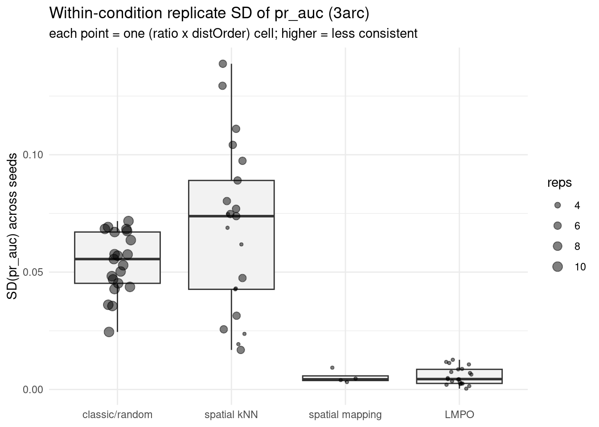
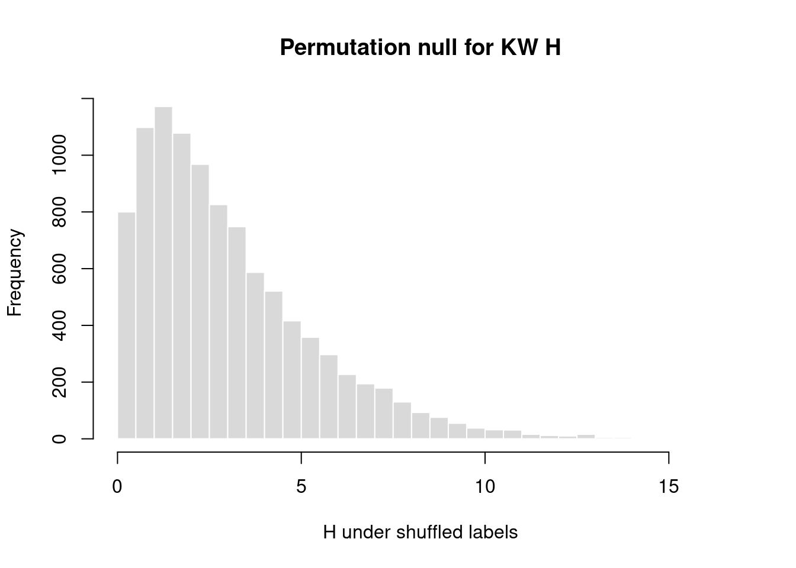

Do CV strategies differ in model-to-model consistency?
Permutation test of replicate dispersion across holdout strategies
Author
Reed Benkendorf
Published
October 24, 2026
Question. Eyeballing the refinement grids, the random (classic) holdout looks like its per-model precision scatters more widely than the spatial strategies — i.e. random is the least consistent replicate-to-replicate. Is that spread genuinely larger, or an artifact of random simply having more fits spread across the whole PA-ratio sweep?
Design. “Consistency” is spread at matched conditions. The ratio sweep and resolution move the metric around for real reasons, so we never compare raw pooled spread. Instead:
A cell = one (tree, resolution, PAratio, distOrder) combination. Within a cell the only thing that varies is the seed (the replicate).
Each cell with >= min_reps seeds yields one dispersion value (SD or MAD across seeds).
Those cell-level dispersions, tagged by CV strategy, are the data. A permutation test shuffles the strategy labels across cells to ask whether random’s typical within-cell spread is larger than chance.
This is re-runnable: as LMPO / spatial-mapping / finer-resolution fits land, rerun and the spatial strategies gain scoreable cells. The replication table below shows how thin each strategy currently is.
One row per fitted model, carrying the chosen metric. own reads the model’s own test-split metrics; gt reads the 2026 field ground truth and pools the two interpolation distance bins (<=270m, >270m) by point count. nAP = (PR-AUC − prevalence)/(1 − prevalence), with the own-split prevalence taken from the PA ratio and the GT prevalence from the field subset.
The permutation test can only use cells with >= min_reps seeds. If a strategy has almost no such cells, it simply can’t be compared yet — that is the week-of-compute reality, not a result.
Scoreable cells and typical within-cell SD of pr_auc
cv
cells
median_disp
mean_disp
classic/random
21
0.0556
0.0538
spatial kNN
21
0.0738
0.0681
spatial mapping
4
0.0043
0.0053
LMPO
21
0.0044
0.0057
Code
ggplot(cell_disp, aes(cv, disp)) +geom_boxplot(outlier.shape =NA, fill ="grey95") +geom_jitter(width =0.12, height =0, alpha =0.5, aes(size = reps)) +scale_size_continuous(range =c(1, 3.5)) +labs(title =sprintf("Within-condition replicate %s of %s (%s)",toupper(params$dispersion), params$metric, RES),subtitle ="each point = one (ratio x distOrder) cell; higher = less consistent",x =NULL, y =sprintf("%s(%s) across seeds", toupper(params$dispersion), params$metric)) +theme_minimal(base_size =11)

Permutation test — omnibus
Null hypothesis: within-cell dispersion is exchangeable across CV strategies (labels carry no information). Test statistic: the Kruskal–Wallis H on the cell-level dispersions (rank-based, so it does not assume normal dispersions). We shuffle the strategy labels across cells B times and compare.
Code
grp_ok <- cell_disp |>count(cv) |>filter(n >=2) |>pull(cv)cd <- cell_disp |>filter(cv %in% grp_ok) |>mutate(cv =droplevels(cv))if (nlevels(cd$cv) <2||nrow(cd) <6) {cat("Not enough scoreable cells across >=2 strategies yet — rerun once the grid fills.\n")} else { kw_H <-function(y, g) unname(kruskal.test(y, g)$statistic) obs <-kw_H(cd$disp, cd$cv) perm <-replicate(params$B, kw_H(cd$disp, sample(cd$cv))) p <- (1+sum(perm >= obs)) / (params$B +1)cat(sprintf("Omnibus KW H = %.2f over %d strategies, %d cells\n", obs, nlevels(cd$cv), nrow(cd)))cat(sprintf("Permutation p = %.4g (parametric KW p = %.4g)\n", p, kruskal.test(cd$disp, cd$cv)$p.value))hist(perm, breaks =40, col ="grey85", border ="white",main ="Permutation null for KW H", xlab ="H under shuffled labels")abline(v = obs, col ="firebrick", lwd =2);}
Omnibus KW H = 47.21 over 4 strategies, 67 cells
Permutation p = 0.0001 (parametric KW p = 3.132e-10)

Permutation test — is random the least consistent?
Targeted one-sided contrast: observed statistic = median within-cell dispersion of random minus median of all other strategies pooled. Positive = random more variable. The null shuffles the random / not-random label across cells.
Code
if (!"classic/random"%in%levels(droplevels(cell_disp$cv)) ||sum(cell_disp$cv =="classic/random") <2||sum(cell_disp$cv !="classic/random") <2) {cat("Need >=2 scoreable cells for random and >=2 for the rest — not yet.\n")} else { is_rand <- cell_disp$cv =="classic/random" stat <-function(flag) median(cell_disp$disp[flag]) -median(cell_disp$disp[!flag]) obs <-stat(is_rand) perm <-replicate(params$B, stat(sample(is_rand))) p_gt <- (1+sum(perm >= obs)) / (params$B +1) # random MORE variablecat(sprintf("median disp: random = %.4f, rest = %.4f, difference = %+.4f\n",median(cell_disp$disp[is_rand]), median(cell_disp$disp[!is_rand]), obs))cat(sprintf("one-sided permutation p (random MORE variable) = %.4g\n", p_gt))# pairwise random vs each other strategycat("\nPairwise (random vs each), one-sided permutation p that random is more variable:\n")for (g insetdiff(levels(droplevels(cell_disp$cv)), "classic/random")) { sub <- cell_disp |>filter(cv %in%c("classic/random", g))if (sum(sub$cv == g) <2) { cat(sprintf(" %-16s (too few cells)\n", g)); next } fr <- sub$cv =="classic/random" st <-function(f) median(sub$disp[f]) -median(sub$disp[!f]) o <-st(fr); pp <- (1+sum(replicate(params$B, st(sample(fr))) >= o)) / (params$B +1)cat(sprintf(" %-16s diff=%+.4f p=%.4g (n_random=%d, n_%s=%d)\n", g, o, pp, sum(fr), g, sum(!fr))) }}
median disp: random = 0.0556, rest = 0.0115, difference = +0.0440
one-sided permutation p (random MORE variable) = 0.0007
Pairwise (random vs each), one-sided permutation p that random is more variable:
spatial kNN diff=-0.0183 p=0.9581 (n_random=21, n_spatial kNN=21)
spatial mapping diff=+0.0512 p=0.0012 (n_random=21, n_spatial mapping=4)
LMPO diff=+0.0511 p=0.0001 (n_random=21, n_LMPO=21)
Secondary: overall pooled spread (descriptive only)
This is what the eye catches in the grids — total spread of each strategy’s models, including the ratio sweep. Fligner–Killeen is a robust test of equal variance, but across the raw values it conflates genuine inconsistency with the sweep, so treat it as a description, not the test.
if (nlevels(droplevels(per_fit$cv)) >=2)print(fligner.test(value ~droplevels(cv), data = per_fit))
Fligner-Killeen test of homogeneity of variances
data: value by droplevels(cv)
Fligner-Killeen:med chi-squared = 200.5, df = 3, p-value < 2.2e-16
Caveats
Replication gates everything. Until a strategy has several >= min_reps cells, it cannot enter the test. Rerun as fits land; the availability table tracks progress.
Own vs GT.source: own tests consistency of each model’s self-assessment; source: gt tests consistency of true field (interpolation) performance. They can disagree — the own-holdout confound ([[cv-comparison-own-holdout-confound]]) means a strategy can be self-consistent yet inconsistent against the field, or vice versa.
Cells are the unit. Permuting labels across cells (not individual fits) respects that seeds within a cell are not independent draws.
Dispersion choice.sd is the natural “precision” spread; mad is robust to a single wild replicate. If they disagree, a few outlier fits are driving sd — worth reporting both.
Metric scale.cox_slope/cox_intercept live on a different scale than pr_auc; compare dispersion only within one metric, never across. ```